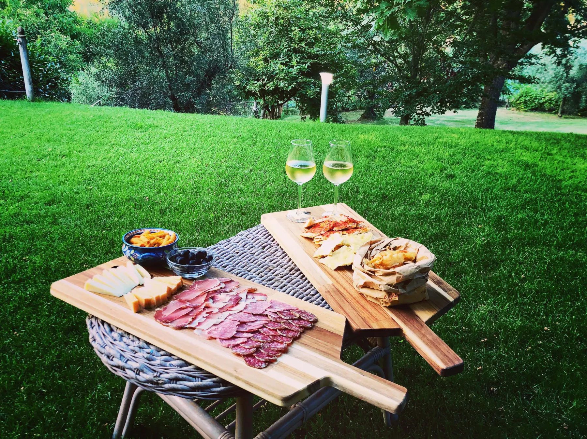
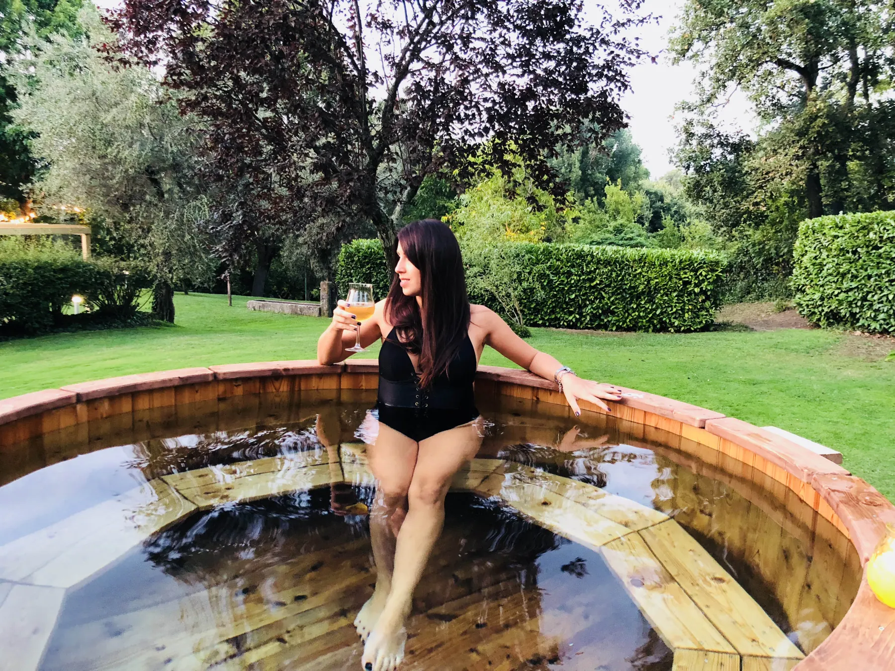
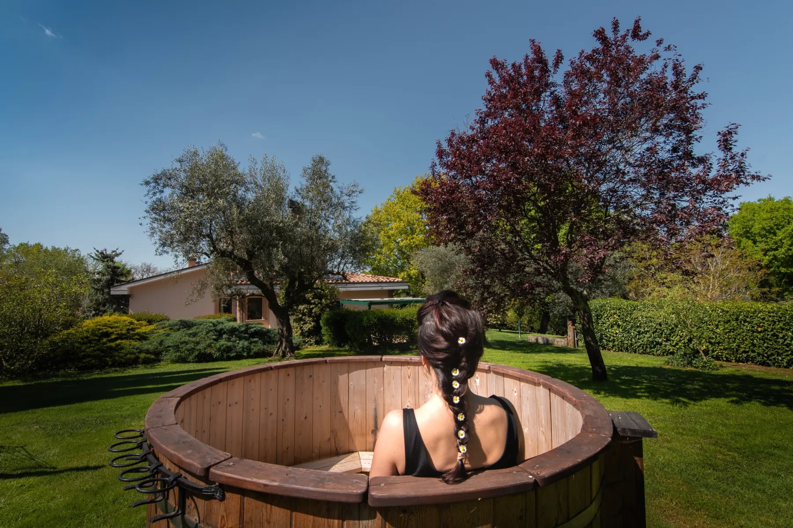
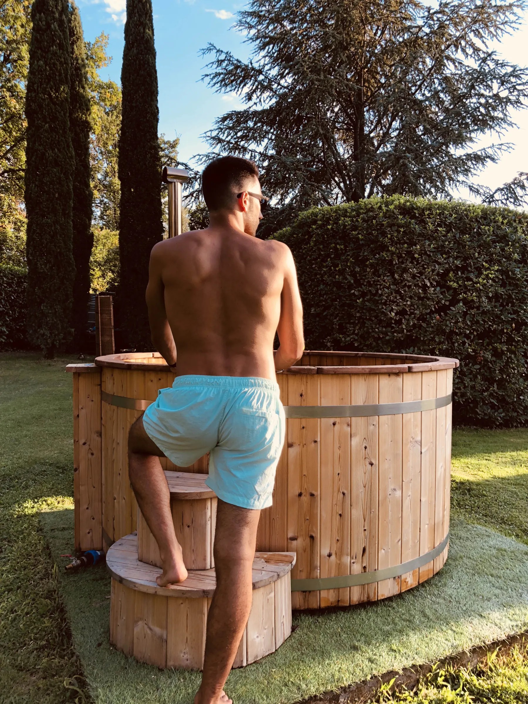
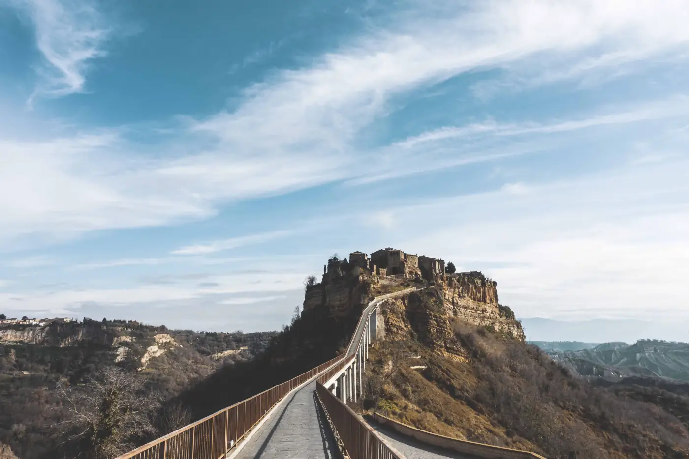
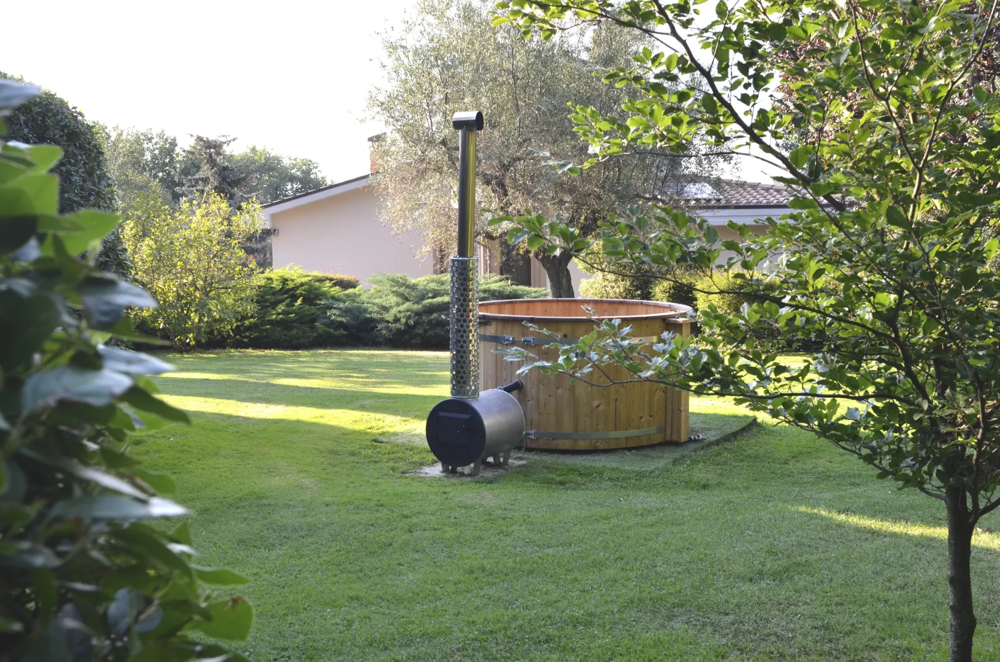

Sapori locali
Colazioni bio, degustazioni e cene private su richiesta, con materie prime del territorio.

Esperienze
Aperitivi nella vasca riscaldata a legna, colazioni lente, cene su richiesta, massaggi, cammini e piccoli riti di benessere.
Solo per voi
Le esperienze non sono un catalogo rigido: si compongono parlando. Date, ospiti, stagione e desideri diventano una proposta concreta, semplice da vivere.

Vasca a legna
Una serata nel giardino, acqua calda, prodotti locali, vino biologico della Tuscia e la sensazione di non dover andare altrove.
È un'esperienza su prenotazione, perfetta per coppie, piccoli gruppi e weekend pensati con calma.
organizza la vasca
Colazioni bio, degustazioni e cene private su richiesta, con materie prime del territorio.

Massaggi, yoga e trattamenti rilassanti in struttura, secondo disponibilità.

Monte Palanzana, Valle dell'Arcionello, terme e borghi: ogni giorno può avere un ritmo diverso.
Idee di soggiorno
Camera, colazione bio, vasca riscaldata, aperitivo e trattamento benessere su richiesta.
Spazi comuni, cena privata, giardino, vasca e itinerari leggeri nei dintorni.
Una base tranquilla per terme, laghi, borghi, sentieri, cantine e rientri silenziosi.

Su misura
Ti rispondiamo con una combinazione realistica in base a periodo, ospiti e disponibilità dei servizi.